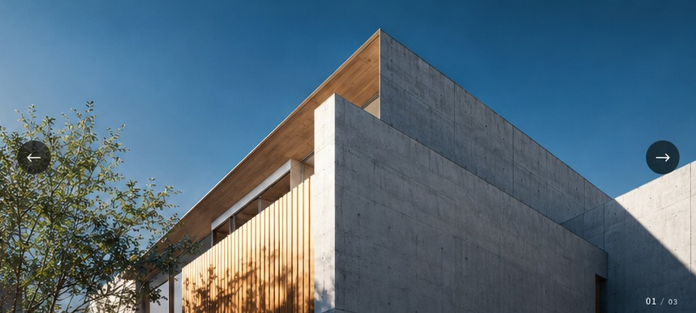
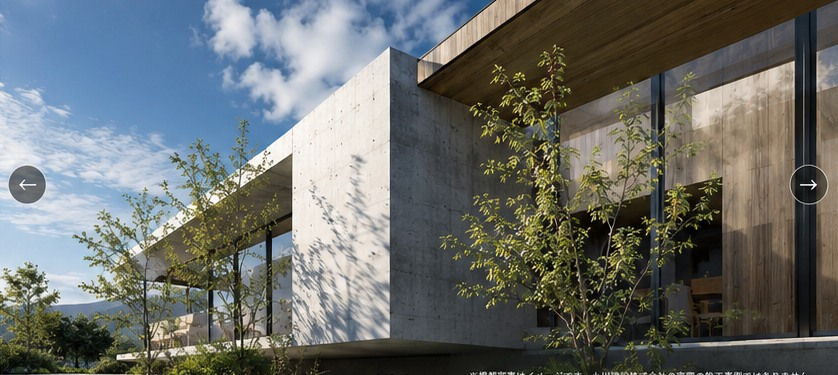
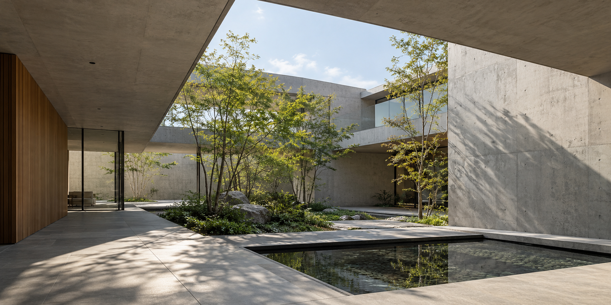
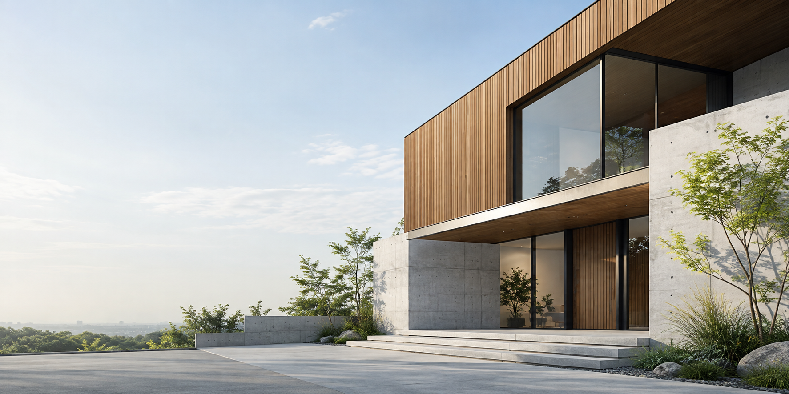
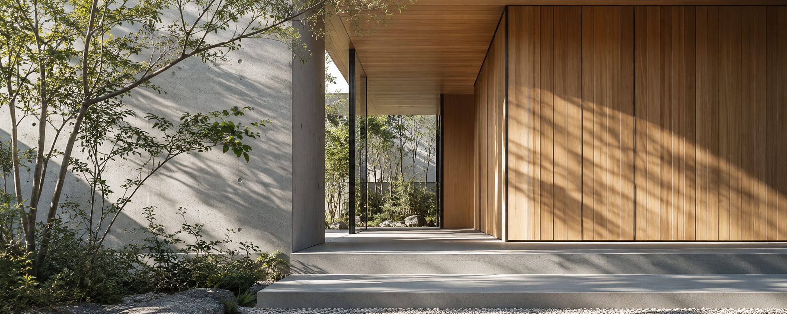
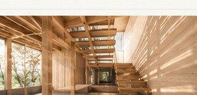

OGAWA KENSETSU / FUKUOKA
建築を、
まじめに。
福岡市早良区賀茂の建設会社
小川建設株式会社
WEB DESIGN PROPOSAL DEMO
このサイトはWeb制作提案用デモです。小川建設株式会社の公式サイトではありません。
0103



PROPOSAL WEBSITE / NOT OFFICIAL
掲載画像は制作提案用のイメージです。小川建設株式会社の施工事例ではありません。
01 ABOUT US
福岡市早良区賀茂に
所在する、
建設会社。
小川建設株式会社は、福岡市早良区賀茂に所在する建設会社です。
公開されている建設業者情報では、建築工事業などの許可情報が確認されています。
02 BUSINESS
PUBLICLY LISTED BUSINESS CATEGORIES
建築工事.
建築一式工事
GENERAL BUILDING WORK—木造建築工事
TIMBER CONSTRUCTION—※公開情報で確認できる業種・分類を掲載しています。具体的な対応工事の範囲を保証するものではありません。
03 BUILDING IMAGE
ARCHITECTURAL STUDIES
素材と光がつくる、
建築の輪郭。



※掲載写真はWeb制作提案用のイメージです。小川建設株式会社の実際の施工事例ではありません。
04 COMPANY
会社概要.
COMPANY PROFILE
- 会社名
- 小川建設株式会社
- 代表者
- 小川 公博
- 所在地
- 〒814-0164
福岡県福岡市早良区賀茂1丁目18-1 - 資本金
- 2,000万円
- 建設業許可
- 福岡県知事許可 第005757号
- 業種
- 建築工事業等
KAMO / FUKUOKA
33° N / FUKUOKA06 CONTACT
FOR INQUIRIES
建築工事についての
お問い合わせ。
お問い合わせは、お電話から。
092-871-0273→